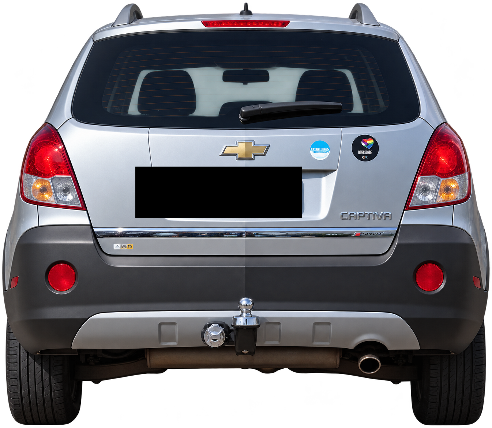
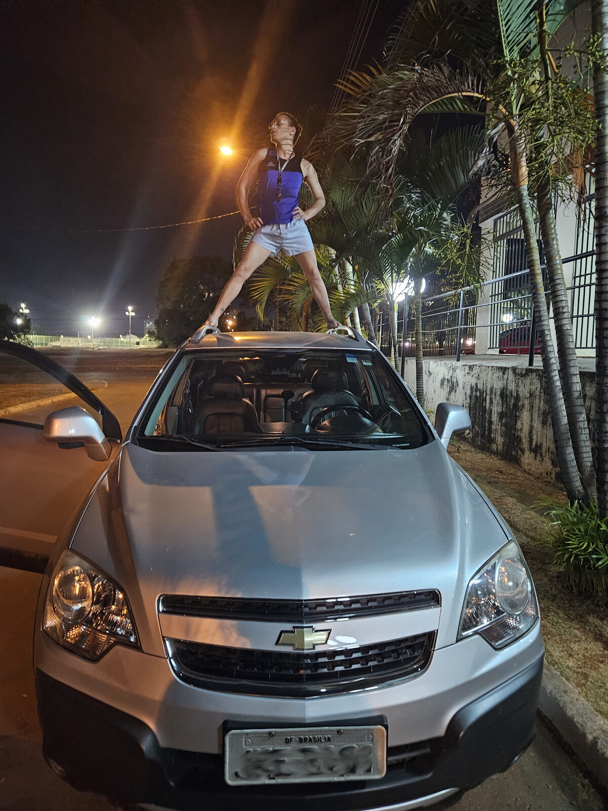
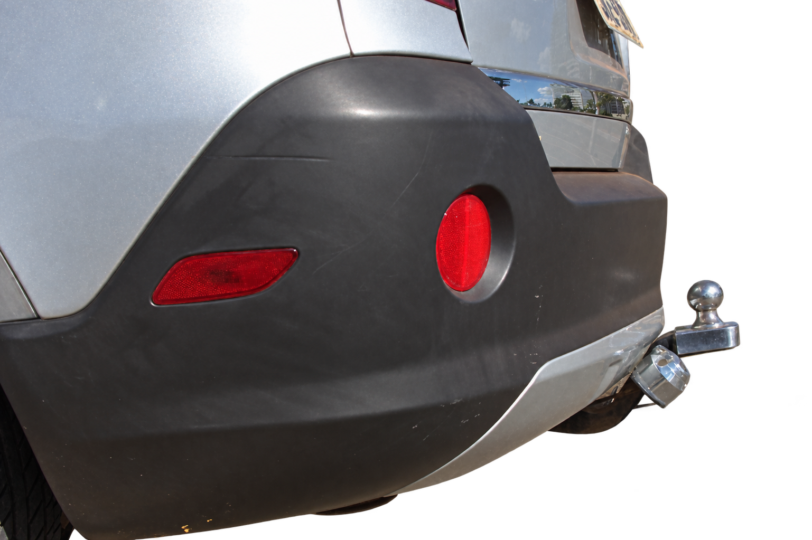

Essa é a Captiva.
Prata.
Bonita.
Grande.
E absolutamente convencida disso.
Talvez ela tenha razão.

Ela não é discreta.
Nunca foi.
Tem presença.
Daquelas que chegam e ocupam o espaço...
E talvez seja justamente isso que eu mais gosto nela.


172.961 km
de estrada, cidade, viagens e escapadas.
E ela continua aqui. Divíssima!

Ela já foi pra Piri, turistou na Bahia. Rodasíssima em Brasília.
Já fez viagens. Deu suas escapadas. Escreveu memórias.


Levou compras. Levou pessoas.
Viveu. Dormiu. Virou cinema. Foi usada.
E foi bem ousada. 😏



Isso tudo, de fora.
Espera só até você entrar.